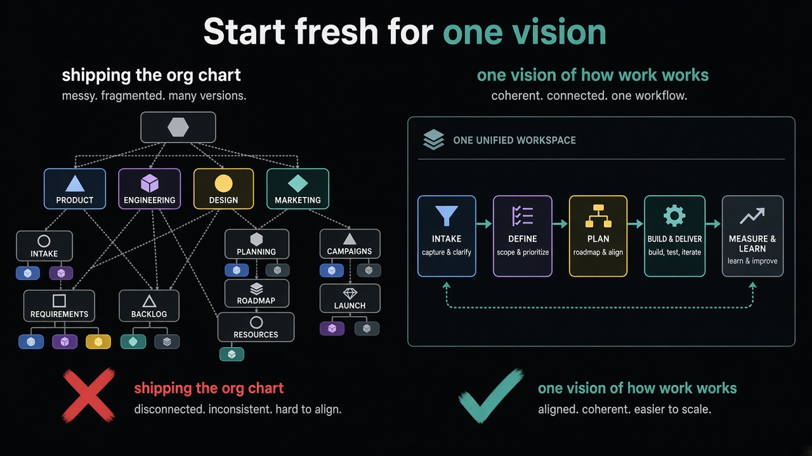

Don’t ship your org chart as product tabs
Source: Lenny Rachitsky (@lennysan) interviewing Roman Ugarte on why Grok Bot started from scratch
original post
What it claims
Bolting a new form factor on as another tab often mirrors the org chart, not a single vision of how work should work. Users feel the seams. Starting from scratch can be the coherent choice when competitors keep adding tabs that read as internal structure, not product intent.
Why it matters for a PO
POs inherit “just put it under the existing shell” pressure. That can ship Conway’s Law into the UI. A Product Goal for a new interaction model may require a greenfield surface — not because greenfield is cool, but because a bolted tab would teach users your org, not the job.
3 takeaways
- If the UI map matches the reporting lines, you are shipping the org chart.
- “Add a tab” is sometimes the cheap path that makes the product feel inconsistent.
- Start-from-scratch is a product decision about vision coherence, not only an engineering rewrite.
Practice this week
Pick one proposed “new tab / new panel” on your product. Sketch whether it exists because of a team boundary or because of a user job. If it is mostly a team boundary, write the alternative: one coherent surface for that job, even if it costs a greenfield slice.